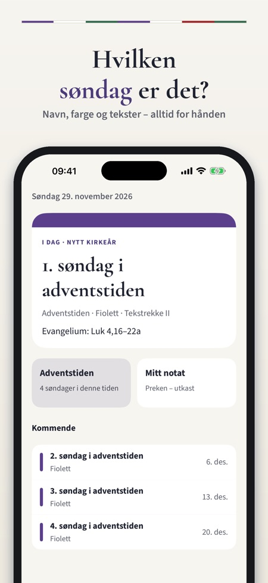
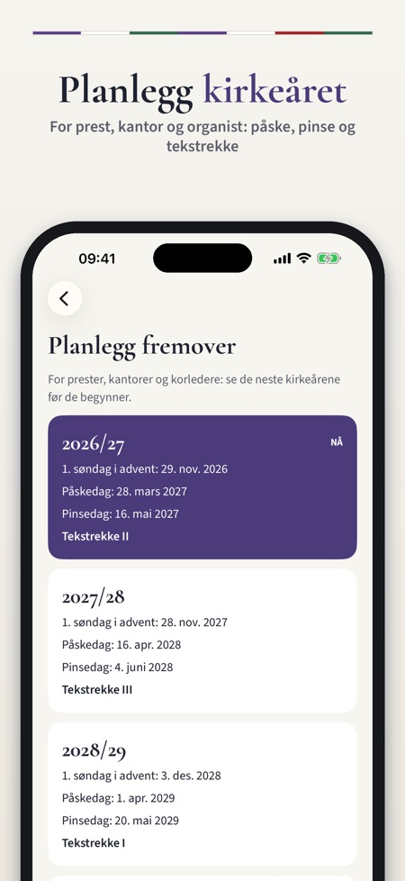
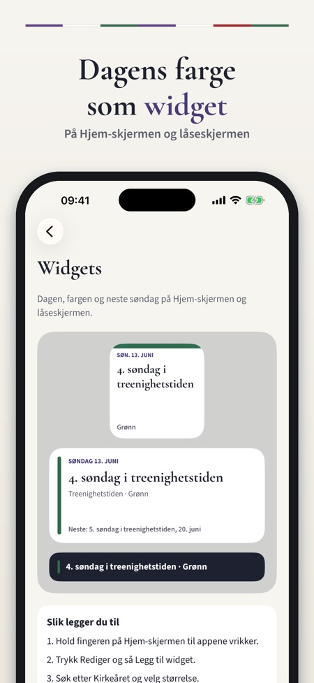

Kirkeåret viser hvilken søndag det er, hvilke tekster som gjelder og hvilken liturgisk farge. For prester, kantorer, organister, korledere, kirketjenere og alle som går i kirken.



Alle søndager og helligdager fra første søndag i advent til siste søndag i kirkeåret, med navn, liturgisk farge og tekstrekke.
Den norske kirkes tre tekstrekker, med rekken som brukes i år markert.
Nei, bare bibelhenvisninger. Du kan søke etter dag eller bibelbok og kopiere henvisningene.
Nei. Bevegelige dager regnes ut på telefonen fra påskedatoen.
Ja, for hver søndag, for eksempel prekenutkast, korplaner og huskelapper. De lagres bare på telefonen.
Ja, widgets for Hjem-skjermen og låseskjermen, og et varsel lørdag kveld med søndagens navn, farge og evangelium.
Dagens dag, kalenderen og tekstene for de neste 28 dagene. Den lille widgeten og varselet lørdag kveld krever ikke kjøp.
Nei, et engangskjøp låser opp hele kirkeåret. Kjøpet kan deles med familien via Familiedeling. Appen er ikke laget av Den norske kirke.
Alle søndager, tekster og liturgiske farger i Den norske kirke – for prester, kantorer, organister, korledere, kirketjenere og alle som går i kirken. Hvilken søndag er det, hvilke tekster og hvilken farge? Kirkeåret har svaret alltid for hånden.
DAGEN I DAG
• Neste søndag eller helligdag med navn, liturgisk farge og tekstrekke
• Evangeliet og de andre lesningene som bibelhenvisninger
• Kommende søndager og høytider
HELE KIRKEÅRET
• Alle søndager og helligdager fra første søndag i advent til siste søndag i kirkeåret
• Ordnet etter kirkeårstidene: advent, jul, åpenbaringstid, faste, påske og pinse/treenighet
• Bevegelige dager regnes ut på telefonen fra påskedatoen – ingen internett trengs
TEKSTREKKENE
• Den norske kirkes tre tekstrekker, med rekken som brukes i år
• Se de andre rekkene på hver dag
• Søk etter dag eller bibelbok, og kopier henvisningene
PLANLEGG
• Planlegg flere kirkeår frem: første søndag i advent, påske, pinse og tekstrekke
• Notater for hver søndag – prekenutkast, korplaner, huskelapper
• Varsel lørdag kveld: søndagens navn, farge og evangelium
• Widgets for Hjem-skjermen og låseskjermen
• Delekort med dagen og tekstene til menighetsbladet eller sosiale medier
LÆR OM KIRKEÅRET
• Korte forklaringer om kirkeårstidene, de liturgiske fargene, tekstrekkene og påskedatoen
KJØP
Dagens dag, kalenderen og tekstene for de neste 28 dagene kan brukes uten kjøp. Et engangskjøp låser opp hele kirkeåret: tekstene for alle dager, alle tekstrekker, fremtidige kirkeår, notater og alle widgets. Den lille widgeten og varselet lørdag kveld krever ikke kjøp. Kjøpet kan deles med familien (Familiedeling). Ingen abonnement, ingen reklame, ingen innlogging.
Appen viser bare bibelhenvisninger, ikke bibeltekst. Kirkeåret er en uavhengig app og er ikke laget av eller tilknyttet Den norske kirke.
PERSONVERN
Notatene lagres bare på telefonen. Appen sender bruksstatistikk uten navn, e-post eller annonse-ID via Google Analytics for Firebase (en tilfeldig app-ID; for eksempel hvilke skjermer og knapper som brukes, kjøp i appen og omtrentlig land), og det kan slås av i Innstillinger.